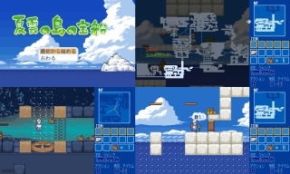
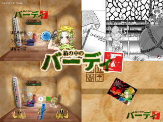
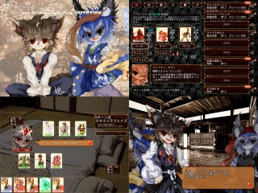
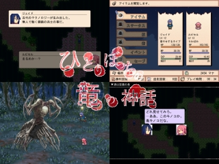

■2017-08-26 (土) 第9回ウディコン結果発表！▼
ということで毎年の夏のお楽しみ、「WOLF RPGエディターコンテスト」も
8/25をもってとうとう結果発表＆閉幕となりました！
【WOLF RPGエディターコンテスト 公式サイト】
今年の第9回は、魅力的な作品が山ほど来て大騒ぎでした。
今回は例年の通り、上位3作品についてご紹介します！
【第１位 夏雲の島の宝船】 halky 様
クリックで拡大

いかにも夏らしさを前面に押し出した、とても爽やかなアクションパズルゲームです。
何がすごいって、見ただけで分かる高品質なドット絵もそうなのですが、
キャラクター挙動の安定っぷりがすごい！
壁に埋まったりすることもなく、
私が作ったアクションゲームのような制御の困難さも全くなく、
まるで市販品のような安心感のある挙動に仕上げられています。
パズルアクションとしては難易度も遊びやすい程度になっており、
基本的には敵キャラが出てこないので安心してパズルに集中できます。
主人公さんがややふくよかな体型なのが珍しくて好感度高いですね！
マップが最初から全オープンされているのも遊びやすくてうれしい配慮です。
劇中には少年探検もの的なワクワクする盛り上がりどころもあり、
最後まで楽しめる作品です。夏の思い出にぜひ。
【第２位 箱の中のバーディ】 おぬ原晃 様
クリックで拡大

『夏雲の島の宝船』が操作しやすいタイプのアクションゲームなのに対し、
こちらの『箱の中のバーディ』は非常に私好みの
「操作に慣れが求められるゲーム」です！
このゲームではゴルフゲームのようにパワーと方向を決め、
青いボールのキャラクターを飛ばしてボス敵に当ててダメージを与えたり、
ボールが跳ね返ってきたのが自分に当たって自爆ダメージを受けたり、
そうならないようにバリアを張って防いだりするゲームです。
物語はほぼ箱の中だけで展開されますが、
戦場もずっと1つの箱の中なので、打ったボールがそれはもうあちこちに跳ね回る！
ステージの間に挟まるコミック的な演出もテンポが良く、
会話も見ていて楽しいので気軽に遊べる一作です。
劇中の会話を楽しむために
主人公たち「ホムンクルス」についての説明を補足しておくと、
ホムンクルスとは一般的に、錬金術師（っぽい人）が作る
「人造生物」のことを指すそうです。
「ホムンクルス」は「フラスコの中でしか生きられない」とか
「生まれたときからあらゆる知識を持っている」といった、そういったお話があります。
それをふまえて会話を読んでみると、より楽しめるかもしれません。
【同率３位 夢遊猫イミテイション】 明野＆a 様
クリックで拡大

夢遊猫シリーズは、なんと第１回ウディコンから何度か投稿されている作品です。
今作『夢遊猫イミテイション』はカードゲーム作品で、
デッキ設定時には戦闘に参加する「3体のモンスター」を選び、
「60枚のスキル・アイテムカードによるデッキ」を構築してバトルを行っていきます。
バトル時は主に「スキルカード」がランダムで手札に来るわけですが、
そのカードはモンスター別に種類分けされているため、
・同じモンスターの攻撃は、基本的に１ターンに一回しかできない。
・スキルに対応したモンスターが死んでしまっている場合も使えない。
といった具合に、スキルカードの使用には制約があります。
うまいこと手札に3匹それぞれ用の攻撃用スキルカードがくることは、
実はあまりありません。
また、カードの使用にはほとんどの場合「MP」が必要ですが、
そのMPは毎ターンの終了時、「手札のカードを捨てる」ことで溜めることができます。
たくさん捨てればその分MPも多く溜まりますが、
中には防御カードも用意されているため、
守りたいなら防御カードを残す、守りを捨てて攻めたいならたくさん捨てる、と、
捨てる量で攻守のバランスを迷わせるシステムが非常に頭を悩ませて面白い！
他にも、キャラクターに応じた特殊スキルなども用意されており、
戦闘の幅を広げています。
参考にされたルール元があるとのことですが、
全体的にとても面白く仕上げられている作品です。
他にもボリューム豊かな会話など楽しみどころがたくさんあるのですが、
ところどころ股間のボリュームも豊かすぎることがあってちょっとビックリしました。
【同率３位 ひとりぼっちの竜の神話】 仔竜 様
クリックで拡大

『ひとりぼっちの竜の神話』の最大の特徴は……サイドビュー戦闘！
ターンが回ると片足を上げたポーズでコマンド入力！
攻撃時にはたまにピコーン！ と電球マークが出て新しい技をひらめく！
作者様からの説明文にもロ○サガ風と書かれているようにとてもロマンシングなRPGなので、
オールドRPGファンの方には「おっ」と思われるのではないでしょうか。
もちろんバトルシステムのオマージュだけでなく
テンポや演出にも非常に配慮されており、
遊びやすいと感じさせる一作です。個人的にはメニュー周りが気持ちよくて好きです。
基本的にはマップを探索しながら一つの目的に向かって進行していく、
スタンダードなストーリーRPGの形式を取られています。
世界観はものすごくダークだと思われるのですが、ほのぼのとした
主人公たちの会話が各所にちりばめられており、そういった面でも飽きさせません。
全体的に高い総合評価を得ることができたのも納得の一作だったと感じます。
ということで、以上、上位の4作品が出揃いました。いかがだったでしょうか？
そして、実は！ これらの上記4作品の総合得点についてなのですが、
1位が「166.4点」だったのに対して、同率3位の得点が「163.7点」と、
この4作品はたった2.7ポイント差の中で紙一重の差を戦い抜いた作品群なのです！
普段でしたら、別々に投稿されていれば4作とも優勝していた可能性がある得点です。
また、このほかにも非常にすばらしい作品の数々が山ほど投稿されており、正直、
「順位が付いてるゲームはほぼ全てに見どころや面白みがある」と
言い切っていいと感じます。
順位が付いてない作品ですら、見どころが溢れるゲームはたくさん！
コメントや部門別順位なども加味して、
面白そうな作品があればぜひ触ってみてください。
【今後について】
今後の開催予定についてですが、ウディコンは来年2018年に「第10回」を、
そして私が無事なら2019年に「第11回」も開催する予定です。
来年は区切りの10回目ということで目標にしておられる方も多いようですので、
楽しみにお待ちしております！
そして第9回ウディコンに関わってくださった全ての関係者の皆さま、
本当にありがとうございました！ 来年もお楽しみに！
2017-08-26 (土)  カテゴリ: ウディタ
カテゴリ: ウディタ
 カテゴリ: ウディタ
カテゴリ: ウディタ